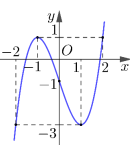
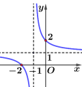
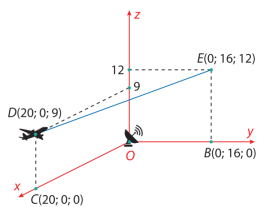
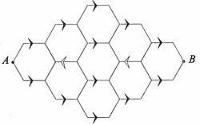
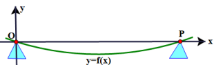
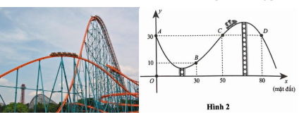
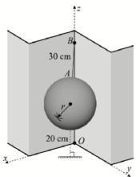

Câu 1. Cho hàm số \( y = f(x) \) có đồ thị là đường cong trong hình vẽ:

Giá trị nhỏ nhất của hàm số đã cho trên đoạn \([-2;2]\) bằng:
Lời giải:
Quan sát đồ thị hàm số trên đoạn \([-2;2]\), ta thấy hàm số có giá trị nhỏ nhất bằng \(-3\) tại \(x=-2\) hoặc \(x=1\).
Đáp án: C.
Câu 2. Đường tiệm cận xiên của đồ thị hàm số \( f(x)=\frac{2x^2-3x+1}{x+1} \) có phương trình là:
Lời giải:
Biến đổi: \( f(x)=\frac{2x^2-3x+1}{x+1}=2x-5+\frac{6}{x+1} \).
Tiệm cận xiên: \( y=2x-5 \).
Đáp án: A.
Câu 3. Đường cong trong hình vẽ là đồ thị của hàm số nào dưới đây?

Lời giải:
Quan sát đồ thị:
- Tiệm cận ngang: \( y=1 \).
- Tiệm cận đứng: \( x=-1 \).
- Giao điểm với trục \( Oy \): \( (0;2) \).
Hàm số \( y=\frac{x+2}{x+1} \) thỏa mãn các điều kiện trên.
Đáp án: D.
Câu 4. Trong không gian \( Oxyz \), cho vector \( \vec{a}=(-1;0;2) \). Mệnh đề nào dưới đây đúng?
Lời giải:
\( 2\vec{a}=2(-1;0;2)=(-2;0;4) \).
Đáp án: C.
Câu 5. Cho hàm số \( y=f(x) \) có đạo hàm \( f'(x)=(x-2)(x+1), \forall x \in \mathbb{R} \). Mệnh đề nào dưới đây đúng?
Lời giải:
\( f'(x)=(x-2)(x+1)=0 \Leftrightarrow x=-1 \) hoặc \( x=2 \).
Bảng xét dấu \( f'(x) \):
| \( x \) | \(-\infty\) | \(-1\) | \(2\) | \(+\infty\) | |
|---|---|---|---|---|---|
| \( f'(x) \) | \(+\) | \(0\) | \(-\) | \(0\) | \(+\) |
Câu 6. Trong không gian \( Oxyz \), cho mặt cầu \( (S): x^2+y^2+z^2-2x+2y-6=0 \). Tọa độ tâm \( I \) của mặt cầu \( (S) \) là:
Lời giải:
Mặt cầu: \( x^2+y^2+z^2-2x+2y-6=0 \).
Tâm \( I\left(\frac{2}{2};-\frac{2}{2};0\right)=(1;-1;0) \).
Đáp án: A.
Câu 7. Một người thống kê thời gian thực hiện các cuộc gọi điện thoại trong một tuần như bảng sau:
| Thời gian (giây) | \([0;60)\) | \([60;120)\) | \([120;180)\) | \([180;240)\) | \([240;300)\) | \([300;360)\) |
|---|---|---|---|---|---|---|
| Số cuộc gọi | 9 | 9 | 5 | 7 | 2 | 1 |
Lời giải:
Bảng tần số tích lũy:
| Thời gian (giây) | \([0;60)\) | \([60;120)\) | \([120;180)\) | \([180;240)\) | \([240;300)\) | \([300;360)\) |
|---|---|---|---|---|---|---|
| Tần số | 9 | 9 | 5 | 7 | 2 | 1 |
| Tần số tích lũy | 9 | 18 | 23 | 30 | 32 | 33 |
Câu 8. Trong không gian \( Oxyz \), cho đường thẳng \( d: \frac{x-1}{2}=\frac{y+1}{1}=\frac{z}{-3} \). Mặt phẳng \( (P) \) đi qua điểm \( A(1;0;1) \) và vuông góc với đường thẳng \( d \) có phương trình là:
Lời giải:
Đường thẳng \( d \) có vector chỉ phương \( \vec{u}_d=(2;1;-3) \).
Mặt phẳng \( (P) \) vuông góc với \( d \), nên vector pháp tuyến là \( \vec{u}_d \).
Mặt phẳng đi qua \( A(1;0;1) \): \( 2(x-1)+1(y-0)-3(z-1)=0 \Leftrightarrow 2x+y-3z+1=0 \).
Đáp án: A.
Câu 9. Nếu \( \int_{-1}^2 f(x) \, dx = 5 \), thì \( \int_{-1}^2 4f(x) \, dx \) bằng:
Lời giải:
\( \int_{-1}^2 4f(x) \, dx = 4 \int_{-1}^2 f(x) \, dx = 4 \cdot 5 = 20 \).
Đáp án: A.
Câu 10. Thể tích của khối chóp có diện tích đáy \( B=6 \) và chiều cao \( h=3 \) bằng:
Lời giải:
Thể tích: \( V = \frac{1}{3} \cdot 6 \cdot 3 = 6 \).
Đáp án: A.
Câu 11. Cho cấp số nhân \( (u_n) \) có số hạng đầu \( u_1=7 \) và công bội \( q=3 \). Số hạng thứ hai của cấp số nhân đã cho là:
Lời giải:
\( u_2 = u_1 \cdot q = 7 \cdot 3 = 21 \).
Đáp án: A.
Câu 12. Nghiệm của phương trình \( 2^x=6 \) là:
Lời giải:
\( 2^x = 6 \Leftrightarrow x = \log_2 6 \).
Đáp án: C.
Câu 13. Cho hàm số \( y = f(x) = x^2 e^x \).
Lời giải:
a) Đúng. \( f'(x) = (x^2)'e^x + x^2 (e^x)' = 2x e^x + x^2 e^x = (x^2 + 2x) e^x \).
b) Sai. \( f'(x) = 0 \Leftrightarrow (x^2 + 2x) e^x = 0 \Leftrightarrow x(x + 2) = 0 \Leftrightarrow x = 0 \) hoặc \( x = -2 \).
c) Đúng. Bảng biến thiên:
| \( x \) | \(-\infty\) | \(-2\) | \(0\) | \(+\infty\) | |
|---|---|---|---|---|---|
| \( f'(x) \) | \(+\) | \(0\) | \(-\) | \(0\) | \(+\) |
Câu 14. Giả sử một máy bay thương mại \( M \) bay từ \( D \) đến \( E \), hình chiếu trên mặt đất là đoạn \( CB \). Tại \( D \), máy bay cách mặt đất \( 9000 \, \text{m} \), tại \( E \) là \( 12000 \, \text{m} \). Radar tại \( O \) cách \( C \) là \( 20000 \, \text{m} \), cách \( B \) là \( 16000 \, \text{m} \), \( \angle BOC = 90^\circ \). Trong hệ \( Oxyz \) (đơn vị: \( 1000 \, \text{m} \)), tọa độ các điểm như hình vẽ:

Lời giải:
a) Sai. \( \overrightarrow{OD} = (20;0;9) \), \( OD = \sqrt{20^2 + 9^2} = \sqrt{481} \approx 22 \, \text{km} \approx 22000 \, \text{m} \).
b) Đúng. Trung điểm \( I \) của \( DE \): \( \left(10;8;\frac{21}{2}\right) \), cách mặt đất \( \frac{21}{2} \, \text{km} = 10500 \, \text{m} \).
c) Đúng. Phương trình tham số \( DE \): \( \begin{cases} x = 20 - 20t \\ y = 16t \\ z = 9 + 3t \end{cases} \). Thay \( P(16;3.2;9.6) \): \( t = 0.2 \), thỏa mãn.
d) Sai. Hình chiếu \( H \) của \( O \) lên \( DE \): \( t = \frac{373}{665} \), \( OH = \sqrt{\frac{180736}{665}} \). Khoảng cách: \( 2 \sqrt{20^2 - \frac{180736}{665}} \approx 22600 \, \text{m} \).
Đáp án: a) Sai, b) Đúng, c) Đúng, d) Sai.
Câu 15. Một quần thể vi khuẩn \( (A) \) có số lượng \( P(t) \) sau \( t \) phút, với tốc độ tăng trưởng \( P'(t) = a e^{0.3t} + 150 e^{-0.13t} \) (vi khuẩn/phút). Ban đầu có \( 200000 \) vi khuẩn, tốc độ tăng trưởng \( 350 \) vi khuẩn/phút. Xét các phát biểu:
Lời giải:
a) Đúng. \( P'(0) = a + 150 = 350 \Rightarrow a = 200 \).
b) Sai. \( P(t) = \int (200 e^{0.3t} + 150 e^{-0.13t}) \, dt = \frac{200}{0.3} e^{0.3t} - \frac{150}{0.13} e^{-0.13t} + C \). Với \( P(0) = 200000 \), \( C = 203000 \). Vậy \( P(t) = \frac{2000}{3} e^{0.3t} - \frac{1500}{0.13} e^{-0.13t} + 203000 \).
c) Đúng. \( P(12) \approx 206152 \).
d) Sai. \( P(17) \approx 210945 \). \( G(t) = 2500 e^{0.2t} + C \), \( G(5) = 210945 \Rightarrow C = 204149 \). \( G(0) = 2500 + 204149 = 206649 \).
Đáp án: a) Đúng, b) Sai, c) Đúng, d) Sai.
Câu 16. Trong một ngôi làng có \( 500 \) người, \( 240 \) người là nam. Khả năng mắc bệnh hô hấp ở nam là \( 0.6\% \), ở nữ là \( 0.35\% \). Gọi \( A \): “gặp người mắc bệnh”, \( B \): “gặp nam”. Xét các phát biểu:
Lời giải:
a) Đúng. \( P(B) = \frac{240}{500} = \frac{12}{25} \), \( P(\bar{B}) = \frac{13}{25} \).
b) Sai. \( P(A|\bar{B}) = 0.0035 \).
c) Sai. \( P(A) = \frac{12}{25} \cdot 0.006 + \frac{13}{25} \cdot 0.0035 = 0.0047 = 0.47\% \).
d) Sai. \( P(\bar{A}) = 1 - 0.0047 = 0.9953 \). \( P(\bar{B}|\bar{A}) = \frac{\frac{13}{25} \cdot (1 - 0.0035)}{0.9953} \approx 0.5206 \).
Đáp án: a) Đúng, b) Sai, c) Sai, d) Sai.
Câu 17. Cho hình chóp tam giác đều \( S.ABC \) có \( AB = 2 \), \( SA = 3 \). Gọi \( \alpha \) là số đo của góc nhị diện \( [S,BC,A] \). Giá trị \( \tan \alpha \) bằng bao nhiêu? (làm tròn đến hàng phần mười).
Lời giải:
Kẻ \( AH \perp BC \), \( O \) là tâm \( \triangle ABC \). \( SO \perp (ABC) \Rightarrow SO \perp BC \).
\( \triangle ABC \) đều: \( AH = \sqrt{3} \), \( OH = \frac{\sqrt{3}}{3} \), \( AO = \frac{2\sqrt{3}}{3} \).
\( SO = \sqrt{3^2 - \left(\frac{2\sqrt{3}}{3}\right)^2} = \frac{\sqrt{69}}{3} \).
\( \tan \alpha = \tan \angle SHO = \frac{SO}{OH} = \frac{\frac{\sqrt{69}}{3}}{\frac{\sqrt{3}}{3}} = \sqrt{23} \approx 4.8 \).
Đáp án: 4.8.
Câu 18. Một con bọ di chuyển từ \( A \) đến \( B \) dọc các đoạn thẳng trong mạng lưới như hình vẽ. Các đoạn có mũi tên chỉ được đi theo hướng mũi tên, các đoạn không có mũi tên đi tùy ý, không đi lại đoạn nào quá một lần. Số con đường khác nhau từ \( A \) đến \( B \) là bao nhiêu?

Lời giải:
Câu 19. Một tấm ván gỗ được đỡ tại \( O \) và \( P \), cách nhau \( 4 \, \text{m} \). Đường cong do trọng lượng có phương trình \( y = f(x) \), với \( f''(x) = \frac{1}{100}\left(2x - \frac{x^2}{2}\right) \), \( 0 \leq x \leq 4 \). Tại điểm cách \( P \) \( 1 \, \text{m} \), tấm ván võng xuống bao nhiêu cm? (làm tròn đến hàng phần trăm).

Lời giải:
\( f'(x) = \int \frac{1}{100}\left(2x - \frac{x^2}{2}\right) \, dx = \frac{1}{100}\left(x^2 - \frac{x^3}{6}\right) + C_1 \).
\( f(x) = \int \left[\frac{1}{100}\left(x^2 - \frac{x^3}{6}\right) + C_1\right] \, dx = \frac{1}{100}\left(\frac{x^3}{3} - \frac{x^4}{24}\right) + C_1 x + C_2 \).
Điều kiện: \( f(0) = f(4) = 0 \).
\( f(0) = 0 \Rightarrow C_2 = 0 \).
\( f(4) = 0 \Rightarrow \frac{1}{100}\left(\frac{4^3}{3} - \frac{4^4}{24}\right) + 4C_1 = 0 \Rightarrow C_1 = -\frac{2}{75} \).
\( f(x) = \frac{1}{100}\left(\frac{x^3}{3} - \frac{x^4}{24}\right) - \frac{2}{75}x \).
Tại \( x = 3 \): \( f(3) \approx -0.02375 \, \text{m} = -2.38 \, \text{cm} \).
Đáp án: 2.38.
Câu 20. Đường chạy của tàu lượn siêu tốc có dạng đồ thị hàm số \( y = ax^3 + bx^2 + cx + d \), \( 0 \leq x \leq 90 \), đi qua \( A \), \( B \), \( C \), \( D \) như hình vẽ. Độ cao lớn nhất so với mặt đất (trục \( Ox \)) là bao nhiêu mét? (làm tròn đến hàng phần mười).

Lời giải:
\( y(0) = 30 \Rightarrow d = 30 \).
\( y(30) = 10 \), \( y(50) = 30 \), \( y(80) = 30 \).
Hệ phương trình:
\( \begin{cases} 27000a + 900b + 30c + 30 = 10 \\ 125000a + 2500b + 50c + 30 = 30 \\ 512000a + 6400b + 80c + 30 = 30 \end{cases} \).
Giải: \( a = -\frac{1}{1500} \), \( b = \frac{13}{150} \), \( c = -\frac{8}{3} \), \( d = 30 \).
\( y = -\frac{1}{1500}x^3 + \frac{13}{150}x^2 - \frac{8}{3}x + 30 \).
\( y' = -\frac{1}{500}x^2 + \frac{13}{75}x - \frac{8}{3} = 0 \Rightarrow x = \frac{200}{3} \), \( x = 20 \).
\( y\left(\frac{200}{3}\right) = \frac{3230}{81} \approx 39.9 \).
Đáp án: 39.9.
Câu 21. Một quả bóng hình cầu có bán kính \( r \), treo trong góc tường (hai tường vuông góc). Điểm \( B \) trên mép hai tường, cách mặt đất \( 80 \, \text{cm} \). Dây treo \( AB = 30 \, \text{cm} \), là khoảng cách ngắn nhất từ \( B \) đến bề mặt quả bóng. Điểm thấp nhất của quả bóng cách mặt đất \( 20 \, \text{cm} \). Đường kính quả bóng là bao nhiêu cm? (làm tròn đến đơn vị).
Lời giải:
Mặt cầu tâm \( I(R;R;R+20) \), bán kính \( R \), \( B(0;0;80) \). \( IB = R + 30 \).
\( IB^2 = R^2 + R^2 + (R + 20 - 80)^2 = (R + 30)^2 \).
\( 2R^2 + (R - 60)^2 = (R + 30)^2 \Rightarrow 2R^2 - 180R + 2700 = 0 \).
\( R = 45 - 15\sqrt{3} \approx 19 \).
Đường kính: \( 2R \approx 38 \, \text{cm} \).
Đáp án: 38.
Câu 22. Cuộc thi khoa học có \( 36 \) bộ câu hỏi: \( 20 \) bộ chủ đề tự nhiên, \( 16 \) bộ chủ đề xã hội. An lấy ngẫu nhiên \( 1 \) bộ (không hoàn lại), rồi Bình lấy \( 1 \) bộ. Xác suất Bình lấy bộ câu hỏi xã hội là \( \frac{a}{b} \) (tối giản). Giá trị \( a + b \) là bao nhiêu?
Lời giải:
Gọi \( A \): An lấy bộ tự nhiên, \( B \): Bình lấy bộ xã hội.
\( P(A) = \frac{20}{36} = \frac{5}{9} \), \( P(\bar{A}) = \frac{4}{9} \).
\( P(B|A) = \frac{16}{35} \), \( P(B|\bar{A}) = \frac{15}{35} \).
\( P(B) = \frac{5}{9} \cdot \frac{16}{35} + \frac{4}{9} \cdot \frac{15}{35} = \frac{4}{9} \).
\( a = 4 \), \( b = 9 \), \( a + b = 13 \).
Đáp án: 13.
Nhập họ và tên: